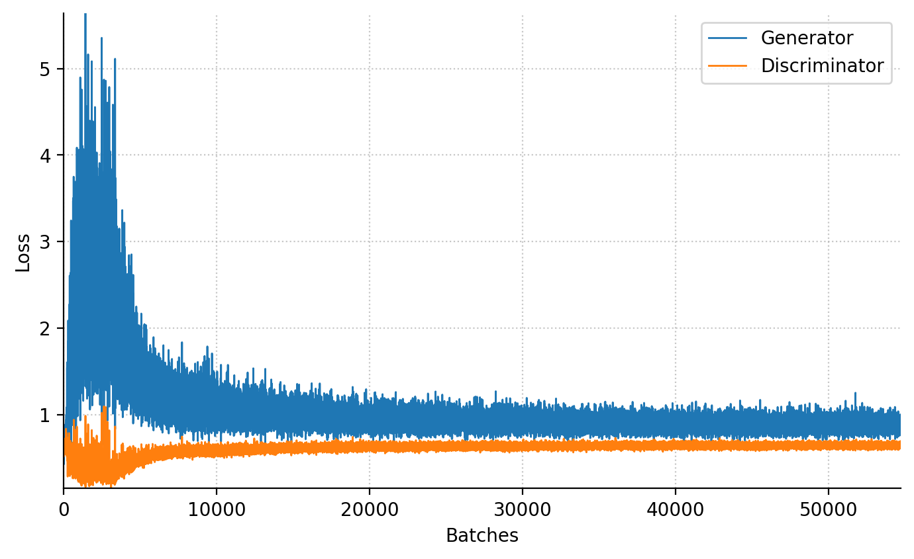
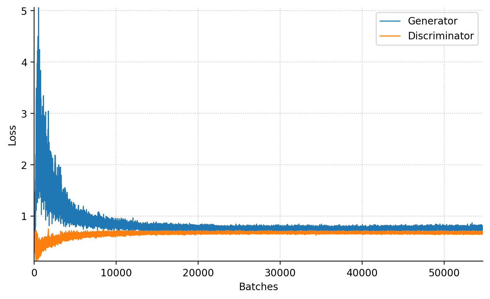
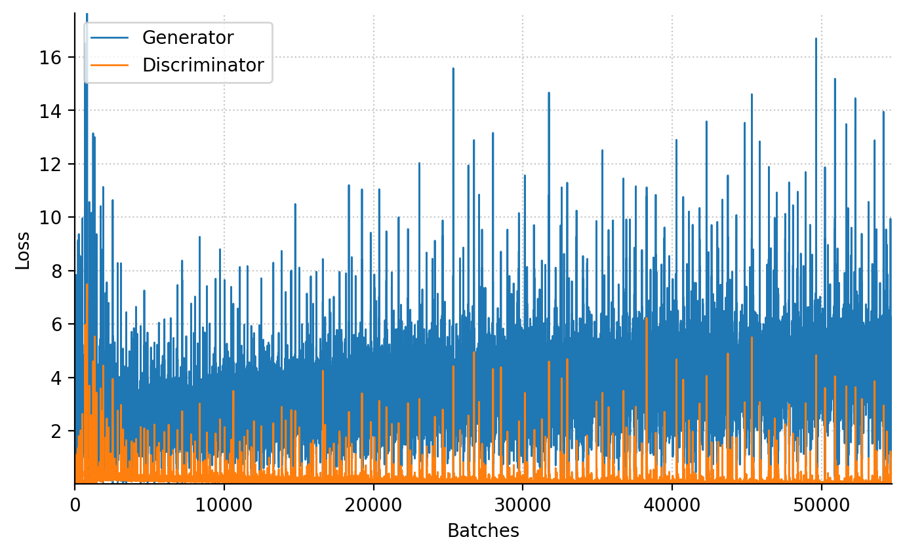
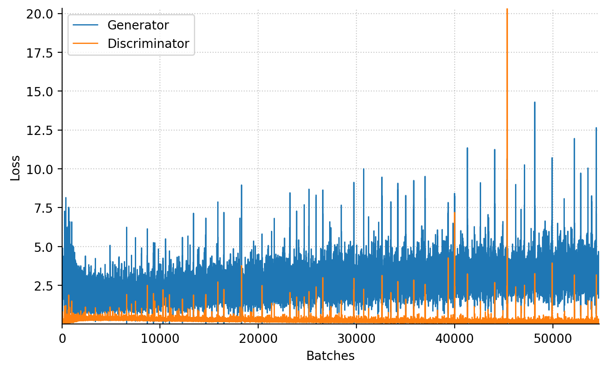

from collections.abc import Callable, Sequence
from pathlib import Path
import numpy as np
from matplotlib import pyplot as plt
%config InlineBackend.figure_formats = {'retina', 'png'}
import torch
from torch import Tensor, nn, optim
from torch.utils.data import ConcatDataset, DataLoader, Dataset
from torchinfo import summary
from torchvision import transforms as T
from torchvision.utils import make_grid
from tqdm import tqdm
SEED = 42
PROJECT_PATH = Path(".").resolve()
FIGURE_PATH = PROJECT_PATH / "figures"
DATASET_PATH = Path.home() / "datasets"Generative Adversarial Networks
pytorch
GAN
Abstract
Generative Adversarial Networks (GANs) represent an innovative class of unsupervised neural networks that have revolutionized the field of artificial intelligence. Eager to learn how they work, I’ve implemented foundational “vanilla” GAN and its more complex counterpart, the Deep Convolutional GAN (DCGAN), from scratch. I’ve put them on a test run on MNIST Digits and Fashion toy datasets.
Introduction
Generative Adversarial Networks (GANs) are an innovative class of unsupervised neural networks that have revolutionized the field of artificial intelligence. They were first introduced in Generative Adversarial Networks (Goodfellow et al. 2014) and consist of two separate neural networks: the generator (creates data) and the discriminator (evaluates data authenticity). The generator aims to fool the discriminator by producing realistic data, while the discriminator tries to differentiate real from fake. Over iterations, the generator’s data becomes more convincing.
As an analogy, consider two kids, one drawing counterfeit money (“Generator”) and another assessing its realism (“Discriminator”). Over time, the counterfeit drawings become increasingly convincing.
Vanilla GAN
The most fundamental variant of GAN is the “vanilla” GAN, where “vanilla” signifies the model in its original and most straightforward form rather than a flavor. To better understand its mechanism, I’ve illustrated its structure on Figure 1.
- Generator \(G(z; w_g)\) takes random noise \(z\) as input and produces fabricated data \(x_f\).
- \(z\) represents the input vector, a noise vector from the Gaussian distribution.
- \(w_g\) denotes generator neural network weights.
- \(x_f\) is a fabricated data sample meant for the discriminator.
- Discriminator \(D(x; w_d)\) differentiates between real and generated data.
- \(x\) represents input vectors, which come from either a real dataset (\(x_r \sim p_\textrm{data}(x)\)) or from the set of fabricated samples (\(x_f = G(z \sim p_z(z); w_g)\)).
- \(w_d\) denodes discriminator neural network weights.
Objective Function
The interaction between the Generator and the Discriminator can be quantified by their objective or loss functions:
- Discriminator’s Objective: For real data \(x\), \(D\) wants \(D(x)\) near \(1\). For generated data \(G(z)\), it targets \(D(G(z))\) close to \(0\). Its objective is:
\[ \mathcal{L}(D) = \log(D(x)) + \log(1 - D(G(z))). \]
- Generator’s Objective: \(G\) aims for \(D(G(z))\) to approach \(1\), given by:
\[ \mathcal{L}(G) = \log(1 − D(G(z))) \]
Both \(G\) and \(D\) continuously improve to outperform each other in this game.
Minimax Game in GANs
Vanilla GANs are structured around the minimax game from game theory:
\[ \min_{G}\max_{D} \mathcal{L}(D, G) = \log(D(x)) + \log(1 - D(G(z))) \]
In essence:
- Discriminator: Maximizes its capacity to differentiate real data from generated.
- Generator: Minimizes the discriminator’s success rate by producing superior forgeries.
The iterative competition refines both, targeting a proficient Generator and a perceptive Discriminator.
Prepare Components
In the upcoming sections, we’ll do the following steps to prepare the development environment:
- Import necessary libraries, primarily PyTorch and Matplotlib.
- Define constants, including project path and seed, for consistency.
- Determine the computational device (e.g., GPU).
- Provide a weight initialization helper function.
AMP_ENABLED = False
device = torch.device("cpu")
if torch.cuda.is_available():
device = torch.device("cuda")
if torch.cuda.is_bf16_supported():
AMP_ENABLED = Truedef weights_init(net: nn.Module) -> None:
for m in net.modules():
if isinstance(m, nn.Conv2d | nn.ConvTranspose2d):
nn.init.normal_(m.weight, 0.0, 0.02)
if m.bias is not None:
nn.init.constant_(m.bias, 0.0)
elif isinstance(m, nn.BatchNorm1d | nn.BatchNorm2d):
nn.init.normal_(m.weight, 1.0, 0.02)
if m.bias is not None:
nn.init.constant_(m.bias, 0.0)
elif isinstance(m, nn.Linear):
nn.init.normal_(m.weight, 0, 0.02)
if m.bias is not None:
nn.init.constant_(m.bias, 0.0)Generator
The Generator in GANs acts as an artist, crafting data.
- Input: Takes random noise, typically from a standard normal distribution.
- Architecture: Uses dense layers, progressively increasing data dimensions.
- Output: Reshapes data to desired format (e.g., image). Often uses ‘tanh’ for activation.
- Objective: Generate data indistinguishable from real by the Discriminator.
class Generator(nn.Module):
def __init__(self, out_dim: Sequence[int], nz: int = 100, ngf: int = 256, alpha: float = 0.2):
"""
:param out_dim: output image dimension / shape
:param nz: size of the latent z vector $z$
:param ngf: size of feature maps (units in the hidden layers) in the generator
:param alpha: negative slope of leaky ReLU activation
"""
super().__init__()
self.out_dim = out_dim
self.model = nn.Sequential(
nn.Linear(nz, ngf),
nn.LeakyReLU(alpha, inplace=True),
nn.Linear(ngf, 2 * ngf),
nn.LeakyReLU(alpha, inplace=True),
nn.Linear(2 * ngf, 4 * ngf),
nn.LeakyReLU(alpha, inplace=True),
nn.Linear(4 * ngf, int(np.prod(self.out_dim))),
nn.Tanh(),
)
def forward(self, x: Tensor) -> Tensor:
x = self.model(x)
x = torch.reshape(x, (x.size(0), *self.out_dim))
return x
summary(Generator(out_dim=(1, 28, 28)), input_size=[128, 100])==========================================================================================
Layer (type:depth-idx) Output Shape Param #
==========================================================================================
Generator [128, 1, 28, 28] --
├─Sequential: 1-1 [128, 784] --
│ └─Linear: 2-1 [128, 256] 25,856
│ └─LeakyReLU: 2-2 [128, 256] --
│ └─Linear: 2-3 [128, 512] 131,584
│ └─LeakyReLU: 2-4 [128, 512] --
│ └─Linear: 2-5 [128, 1024] 525,312
│ └─LeakyReLU: 2-6 [128, 1024] --
│ └─Linear: 2-7 [128, 784] 803,600
│ └─Tanh: 2-8 [128, 784] --
==========================================================================================
Total params: 1,486,352
Trainable params: 1,486,352
Non-trainable params: 0
Total mult-adds (Units.MEGABYTES): 190.25
==========================================================================================
Input size (MB): 0.05
Forward/backward pass size (MB): 2.64
Params size (MB): 5.95
Estimated Total Size (MB): 8.63
==========================================================================================Discriminator
The Discriminator is GAN’s evaluator, distinguishing real from fake data.
- Input: Takes either real data samples or those from the Generator.
- Architecture: Employs dense layers for binary classification of the input.
- Output: Uses a sigmoid activation, yielding a score between 0-1, reflecting the data’s authenticity.
- Objective: Recognize real data and identify fake data from the Generator.
class Discriminator(nn.Module):
def __init__(self, input_dim: Sequence[int], ndf: int = 128, alpha: float = 0.2):
super().__init__()
self.model = nn.Sequential(
nn.Linear(int(np.prod(input_dim)), 4 * ndf),
nn.LeakyReLU(alpha, inplace=True),
nn.Dropout(0.3),
nn.Linear(4 * ndf, 2 * ndf),
nn.LeakyReLU(alpha, inplace=True),
nn.Dropout(0.3),
nn.Linear(2 * ndf, ndf),
nn.LeakyReLU(alpha, inplace=True),
nn.Dropout(0.3),
nn.Linear(ndf, 1),
nn.Sigmoid(),
)
def forward(self, x: Tensor) -> Tensor:
x = torch.reshape(x, (x.size(0), -1))
return self.model(x)
summary(Discriminator(input_dim=(1, 28, 28)), input_size=[128, 1, 28, 28])==========================================================================================
Layer (type:depth-idx) Output Shape Param #
==========================================================================================
Discriminator [128, 1] --
├─Sequential: 1-1 [128, 1] --
│ └─Linear: 2-1 [128, 512] 401,920
│ └─LeakyReLU: 2-2 [128, 512] --
│ └─Dropout: 2-3 [128, 512] --
│ └─Linear: 2-4 [128, 256] 131,328
│ └─LeakyReLU: 2-5 [128, 256] --
│ └─Dropout: 2-6 [128, 256] --
│ └─Linear: 2-7 [128, 128] 32,896
│ └─LeakyReLU: 2-8 [128, 128] --
│ └─Dropout: 2-9 [128, 128] --
│ └─Linear: 2-10 [128, 1] 129
│ └─Sigmoid: 2-11 [128, 1] --
==========================================================================================
Total params: 566,273
Trainable params: 566,273
Non-trainable params: 0
Total mult-adds (Units.MEGABYTES): 72.48
==========================================================================================
Input size (MB): 0.40
Forward/backward pass size (MB): 0.92
Params size (MB): 2.27
Estimated Total Size (MB): 3.59
==========================================================================================Traning Loop
The training process is iterative:
- Update Discriminator: With the Generator static, improve the Discriminator’s detection of real vs. fake.
- Update Generator: With a static Discriminator, enhance the Generator’s ability to deceive.
Training continues until the Generator produces almost authentic data. Equilibrium is reached when the Discriminator sees every input as equally likely real or fake, assigning a probability of \(\frac{1}{2}\).
Note
Using .eval() and .train() modes initially seemed promising for faster training. However, they affected layers like BatchNorm2d and Dropout, making the GAN diverge. Also, switching between eval and train modes is not free of charge.
def train_step(
generator: nn.Module,
discriminator: nn.Module,
optim_G: optim.Optimizer,
optim_D: optim.Optimizer,
criterion: Callable[[torch.Tensor, torch.Tensor], torch.Tensor],
real_data: torch.Tensor,
noise_dim: int,
device: torch.device,
) -> tuple[float, float]:
batch_size = real_data.size(0)
real_data = real_data.to(device)
# Labels for real and fake data
real_labels = torch.ones(batch_size, 1, device=device)
fake_labels = torch.zeros(batch_size, 1, device=device)
### Train Discriminator
# Real data
output_real = discriminator(real_data)
loss_D_real = criterion(output_real, real_labels)
# Fake data
noise = torch.randn(batch_size, noise_dim, dtype=torch.float, device=device)
fake_data = generator(noise)
output_fake = discriminator(fake_data.detach())
loss_D_fake = criterion(output_fake, fake_labels)
# Backprop and optimize for discriminator
loss_D = (loss_D_real + loss_D_fake) / 2.0
discriminator.zero_grad()
loss_D.backward()
optim_D.step()
### Train Generator
# Recompute fake data’s discriminator scores
output_fake = discriminator(fake_data)
loss_G = criterion(output_fake, real_labels)
# Backprop and optimize for generator
generator.zero_grad()
loss_G.backward()
optim_G.step()
return loss_G.item(), loss_D.item()Evaluation
Before evaluation, we configured the learning rate (LR), optimizer’s \(\beta\) parameters, batch size, and data loader settings for all experiments. We used the MNIST digits and MNIST fashion datasets for assessment.
OPTIMIZER_LR = 0.0002
L2_NORM = 1e-5
OPTIMIZER_BETAS = (0.5, 0.999)
N_EPOCHS = 100
BATCH_SIZE = 128g = torch.Generator()
g.manual_seed(SEED)
loader_kwargs = {
"num_workers": 8,
"pin_memory": True,
"shuffle": True,
"batch_size": BATCH_SIZE,
"prefetch_factor": 16,
"persistent_workers": False,
"worker_init_fn": seed_worker,
"generator": g,
}MNIST Digits Dataset
The MNIST (Modified National Institute of Standards and Technology) dataset is a well-known collection of handwritten digits, extensively used in the fields of machine learning and computer vision for training and testing purposes. Its simplicity and size make it a popular choice for introductory courses and experiments in image recognition.
In total, the dataset contains 70,000 grayscale images of handwritten digits (from 0 to 9). Each image is 28x28 pixels.
def get_minst_dataset(transform=None) -> Dataset:
from torchvision.datasets import MNIST
root = str(DATASET_PATH)
trainset = MNIST(root=root, train=True, download=True, transform=transform)
testset = MNIST(root=root, train=False, download=True, transform=transform)
# Combine train and test dataset for more samples.
dataset = ConcatDataset([trainset, testset])
return datasetIMG_DIM = (1, 28, 28)
NOISE_DIM = 100transform = T.Compose(
[
T.ToTensor(),
T.Normalize(0.5, 0.5),
]
)
data = get_minst_dataset(transform=transform)
dataloader = DataLoader(data, **loader_kwargs)
# set seed for random generators
set_random_seed()
# benchmark_noise is used for the animation to show how output evolve on the same vector
benchmark_noise = torch.randn(16 * 16, NOISE_DIM, device=device)
generator = Generator(out_dim=IMG_DIM, nz=NOISE_DIM).to(device)
generator.apply(weights_init)
discriminator = Discriminator(input_dim=IMG_DIM).to(device)
discriminator.apply(weights_init)
optimizer_G = optim.AdamW(
generator.parameters(),
lr=OPTIMIZER_LR,
betas=OPTIMIZER_BETAS,
weight_decay=L2_NORM,
)
optimizer_D = optim.AdamW(
discriminator.parameters(),
lr=OPTIMIZER_LR,
betas=OPTIMIZER_BETAS,
weight_decay=L2_NORM,
)
criterion = nn.BCELoss().to(device)animation: list[Tensor] = []
g_losses: list[float] = []
d_losses: list[float] = []
for _ in tqdm(range(N_EPOCHS), unit="epochs"):
generator.train()
discriminator.train()
for samples_real, _ in dataloader:
g_loss, d_loss = train_step(
generator, discriminator, optimizer_G, optimizer_D, criterion, samples_real, NOISE_DIM, device
)
g_losses.append(g_loss)
d_losses.append(d_loss)
generator.eval()
with torch.inference_mode():
images = generator(benchmark_noise)
images = images.detach().cpu()
images = make_grid(images, nrow=16, normalize=True)
animation.append(images)100%|██████████| 100/100 [07:44<00:00, 4.64s/epochs]
MNIST Fashion Dataset
The Fashion MNIST dataset is a collection of grayscale images of 10 different categories of clothing items, designed as a more challenging alternative to the classic MNIST dataset of handwritten digits. Each image in the dataset is 28x28 pixels. The 10 categories include items like t-shirts/tops, trousers, pullovers, dresses, coats, sandals, and more. With 70,000 images, Fashion MNIST is commonly used for benchmarking machine learning algorithms, especially in image classification tasks.
IMG_DIM = (1, 28, 28)
NOISE_DIM = 100def get_mnist_fashion_dataset(transform=None):
from torchvision.datasets import FashionMNIST
root = str(DATASET_PATH)
trainset = FashionMNIST(root=root, train=True, download=True, transform=transform)
testset = FashionMNIST(root=root, train=False, download=True, transform=transform)
# Combine train and test dataset for more samples.
dataset = ConcatDataset([trainset, testset])
return datasettransform = T.Compose([T.ToTensor(), T.Normalize(0.5, 0.5)])
data = get_mnist_fashion_dataset(transform=transform)
dataloader = DataLoader(data, **loader_kwargs)
# set seed for random generators
set_random_seed()
# benchmark_noise is used for the animation to show how output evolve on same vector
benchmark_noise = torch.randn(16 * 16, NOISE_DIM, device=device)
generator = Generator(out_dim=IMG_DIM, nz=NOISE_DIM).to(device)
generator.apply(weights_init)
discriminator = Discriminator(input_dim=IMG_DIM).to(device)
discriminator.apply(weights_init)
optimizer_G = optim.AdamW(
generator.parameters(),
lr=OPTIMIZER_LR,
betas=OPTIMIZER_BETAS,
weight_decay=L2_NORM,
)
optimizer_D = optim.AdamW(
discriminator.parameters(),
lr=OPTIMIZER_LR,
betas=OPTIMIZER_BETAS,
weight_decay=L2_NORM,
)
criterion = nn.BCELoss().to(device)animation = []
g_losses, d_losses = [], []
for _ in tqdm(range(N_EPOCHS), unit="epochs"):
generator.train()
discriminator.train()
for samples_real, _ in dataloader:
g_loss, d_loss = train_step(
generator, discriminator, optimizer_G, optimizer_D, criterion, samples_real, NOISE_DIM, device
)
g_losses.append(g_loss)
d_losses.append(d_loss)
generator.eval()
with torch.inference_mode():
images = generator(benchmark_noise)
images = images.detach().cpu()
images = make_grid(images, nrow=16, normalize=True)
animation.append(images)100%|██████████| 100/100 [07:46<00:00, 4.67s/epochs]
DCGAN
DCGAN, short for Deep Convolutional Generative Adversarial Network, differs from vanilla GAN by using convolutional layers. This design makes DCGAN better for image data. With specific architectural guidelines, DCGAN trains more consistently and generates clearer images than vanilla GANs across various hyperparameters.
Setting Up DCGANs
Generator
class Generator(nn.Module):
def __init__(self, nz: int = 100, ngf: int = 32, nc: int = 1):
"""
:param nz: size of the latent z vector
:param ngf: size of feature maps in generator
:param nc: number of channels in the training images.
"""
super().__init__()
self.layers = nn.Sequential(
nn.ConvTranspose2d(nz, 4 * ngf, 4, 1, 0, bias=False),
nn.BatchNorm2d(4 * ngf),
nn.ReLU(inplace=True),
nn.ConvTranspose2d(4 * ngf, 2 * ngf, 3, 2, 1, bias=False),
nn.BatchNorm2d(2 * ngf),
nn.ReLU(inplace=True),
nn.ConvTranspose2d(2 * ngf, ngf, 4, 2, 1, bias=False),
nn.BatchNorm2d(ngf),
nn.ReLU(inplace=True),
nn.ConvTranspose2d(ngf, nc, 4, 2, 1, bias=False),
nn.Tanh(),
)
def forward(self, x: Tensor) -> Tensor:
x = torch.reshape(x, (x.size(0), -1, 1, 1))
return self.layers(x)
summary(Generator(), input_size=(128, 100))==========================================================================================
Layer (type:depth-idx) Output Shape Param #
==========================================================================================
Generator [128, 1, 28, 28] --
├─Sequential: 1-1 [128, 1, 28, 28] --
│ └─ConvTranspose2d: 2-1 [128, 128, 4, 4] 204,800
│ └─BatchNorm2d: 2-2 [128, 128, 4, 4] 256
│ └─ReLU: 2-3 [128, 128, 4, 4] --
│ └─ConvTranspose2d: 2-4 [128, 64, 7, 7] 73,728
│ └─BatchNorm2d: 2-5 [128, 64, 7, 7] 128
│ └─ReLU: 2-6 [128, 64, 7, 7] --
│ └─ConvTranspose2d: 2-7 [128, 32, 14, 14] 32,768
│ └─BatchNorm2d: 2-8 [128, 32, 14, 14] 64
│ └─ReLU: 2-9 [128, 32, 14, 14] --
│ └─ConvTranspose2d: 2-10 [128, 1, 28, 28] 512
│ └─Tanh: 2-11 [128, 1, 28, 28] --
==========================================================================================
Total params: 312,256
Trainable params: 312,256
Non-trainable params: 0
Total mult-adds (Units.GIGABYTES): 1.76
==========================================================================================
Input size (MB): 0.05
Forward/backward pass size (MB): 24.26
Params size (MB): 1.25
Estimated Total Size (MB): 25.57
==========================================================================================Discriminator
class Discriminator(nn.Module):
def __init__(self, ndf: int = 32, nc: int = 1, alpha: float = 0.2):
super().__init__()
self.layers = nn.Sequential(
nn.Conv2d(nc, ndf, 4, 2, 1, bias=False),
nn.BatchNorm2d(ndf),
nn.LeakyReLU(alpha, inplace=True),
nn.Conv2d(ndf, 2 * ndf, 4, 2, 1, bias=False),
nn.BatchNorm2d(2 * ndf),
nn.LeakyReLU(alpha, inplace=True),
nn.Conv2d(2 * ndf, 4 * ndf, 3, 2, 1, bias=False),
nn.BatchNorm2d(ndf * 4),
nn.LeakyReLU(alpha, inplace=True),
nn.Conv2d(4 * ndf, 1, 4, 1, 0, bias=False),
nn.Sigmoid(),
)
def forward(self, x: Tensor) -> Tensor:
x = self.layers(x)
x = torch.reshape(x, (x.size(0), -1))
return x
summary(Discriminator(), input_size=(BATCH_SIZE, 1, 28, 28))==========================================================================================
Layer (type:depth-idx) Output Shape Param #
==========================================================================================
Discriminator [128, 1] --
├─Sequential: 1-1 [128, 1, 1, 1] --
│ └─Conv2d: 2-1 [128, 32, 14, 14] 512
│ └─BatchNorm2d: 2-2 [128, 32, 14, 14] 64
│ └─LeakyReLU: 2-3 [128, 32, 14, 14] --
│ └─Conv2d: 2-4 [128, 64, 7, 7] 32,768
│ └─BatchNorm2d: 2-5 [128, 64, 7, 7] 128
│ └─LeakyReLU: 2-6 [128, 64, 7, 7] --
│ └─Conv2d: 2-7 [128, 128, 4, 4] 73,728
│ └─BatchNorm2d: 2-8 [128, 128, 4, 4] 256
│ └─LeakyReLU: 2-9 [128, 128, 4, 4] --
│ └─Conv2d: 2-10 [128, 1, 1, 1] 2,048
│ └─Sigmoid: 2-11 [128, 1, 1, 1] --
==========================================================================================
Total params: 109,504
Trainable params: 109,504
Non-trainable params: 0
Total mult-adds (Units.MEGABYTES): 369.68
==========================================================================================
Input size (MB): 0.40
Forward/backward pass size (MB): 23.46
Params size (MB): 0.44
Estimated Total Size (MB): 24.30
==========================================================================================Evaluation
MNIST Digits Dataset
IMG_DIM = (1, 28, 28)
NOISE_DIM = 128
transform = T.Compose(
[
T.ToTensor(),
T.Normalize(0.5, 0.5),
]
)
data = get_minst_dataset(transform)
dataloader = DataLoader(data, **loader_kwargs)
# set seed for random generators
set_random_seed()
# benchmark_noise is used for the animation to show how output evolve on same vector
benchmark_noise = torch.randn(16 * 16, NOISE_DIM, device=device)
generator = Generator(nz=NOISE_DIM, ngf=32, nc=IMG_DIM[0]).to(device)
generator.apply(weights_init)
discriminator = Discriminator(ndf=32, nc=IMG_DIM[0]).to(device)
discriminator.apply(weights_init)
optimizer_G = optim.AdamW(
generator.parameters(),
lr=OPTIMIZER_LR,
betas=OPTIMIZER_BETAS,
weight_decay=L2_NORM,
)
optimizer_D = optim.AdamW(
discriminator.parameters(),
lr=OPTIMIZER_LR,
betas=OPTIMIZER_BETAS,
weight_decay=L2_NORM,
)
criterion = nn.BCELoss().to(device)animation = []
g_losses, d_losses = [], []
for _ in tqdm(range(N_EPOCHS), unit="epochs"):
generator.train()
discriminator.train()
for samples_real, _ in dataloader:
g_loss, d_loss = train_step(
generator, discriminator, optimizer_G, optimizer_D, criterion, samples_real, NOISE_DIM, device
)
g_losses.append(g_loss)
d_losses.append(d_loss)
generator.eval()
with torch.inference_mode():
images = generator(benchmark_noise)
images = images.detach().cpu()
images = make_grid(images, nrow=16, normalize=True)
animation.append(images)100%|██████████| 100/100 [05:22<00:00, 3.22s/epochs]
MNIST Fashion Dataset
IMG_DIM = (1, 28, 28)
NOISE_DIM = 128
transform = T.Compose(
[
T.ToTensor(),
T.Normalize(0.5, 0.5),
]
)
data = get_mnist_fashion_dataset(transform)
dataloader = DataLoader(data, **loader_kwargs)
# set seed for random generators
set_random_seed()
# benchmark_noise is used for the animation to show how output evolve on same vector
benchmark_noise = torch.randn(16 * 16, NOISE_DIM, device=device)
generator = Generator(nz=NOISE_DIM, ngf=32, nc=IMG_DIM[0]).to(device)
generator.apply(weights_init)
discriminator = Discriminator(ndf=32, nc=IMG_DIM[0]).to(device)
discriminator.apply(weights_init)
optimizer_G = optim.AdamW(
generator.parameters(),
lr=OPTIMIZER_LR,
betas=OPTIMIZER_BETAS,
weight_decay=L2_NORM,
)
optimizer_D = optim.AdamW(discriminator.parameters(), lr=OPTIMIZER_LR, betas=OPTIMIZER_BETAS, weight_decay=L2_NORM)
criterion = nn.BCELoss().to(device) # F.binary_cross_entropy_with_logits #nn.BCELoss().to(device)animation = []
g_losses, d_losses = [], []
for _ in tqdm(range(N_EPOCHS), unit="epochs"):
generator.train()
discriminator.train()
for samples_real, _ in dataloader:
g_loss, d_loss = train_step(
generator, discriminator, optimizer_G, optimizer_D, criterion, samples_real, NOISE_DIM, device
)
g_losses.append(g_loss)
d_losses.append(d_loss)
generator.eval()
with torch.inference_mode():
images = generator(benchmark_noise)
images = images.detach().cpu()
images = make_grid(images, nrow=16, normalize=True)
animation.append(images)100%|██████████| 100/100 [05:24<00:00, 3.24s/epochs]
Conclusion
Generative Adversarial Networks (GANs) represent an innovative class of unsupervised neural networks that have significantly impacted the field of artificial intelligence (AI). They consist of two components: a Generator that improves its output and a Discriminator that enhances its evaluative skills. In a competitive yet symbiotic relationship, these two networks converge towards a dynamic equilibrium. This interaction exemplifies the strength of GANs and the adaptability of adversarial learning in AI, blending creative generation with critical assessment.
In this post, I explore the original GAN, often referred to as the “vanilla” GAN. My aim was to understand the basic mechanics of how GANs operate. Meanwhile, others have advanced this technology, applying it to a range of innovative and fascinating new areas.
References
Goodfellow, Ian J., Jean Pouget-Abadie, Mehdi Mirza, Bing Xu, David Warde-Farley, Sherjil Ozair, Aaron Courville, and Yoshua Bengio. 2014. “Generative Adversarial Networks.” https://arxiv.org/abs/1406.2661.